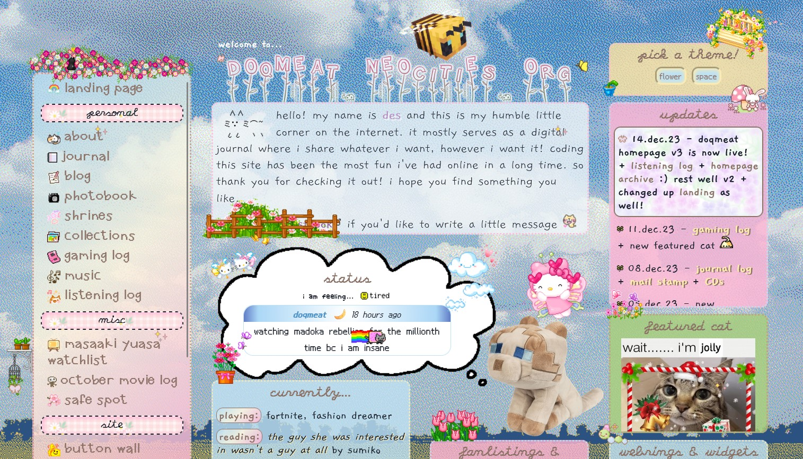
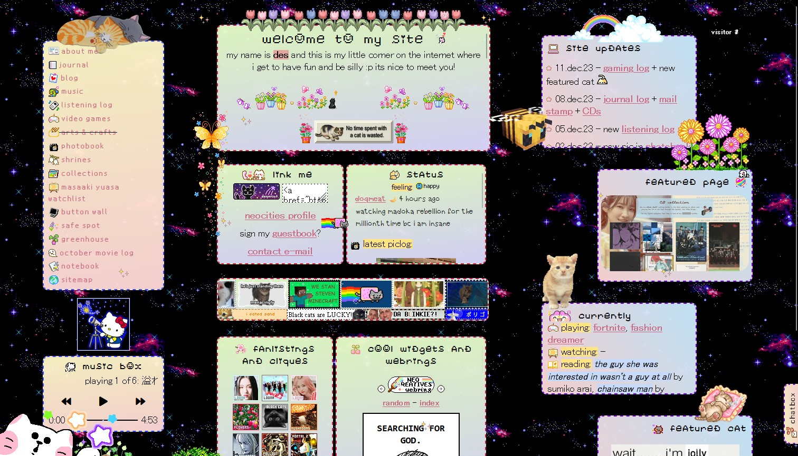
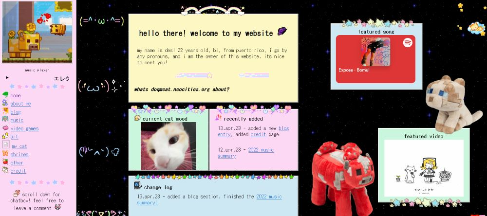
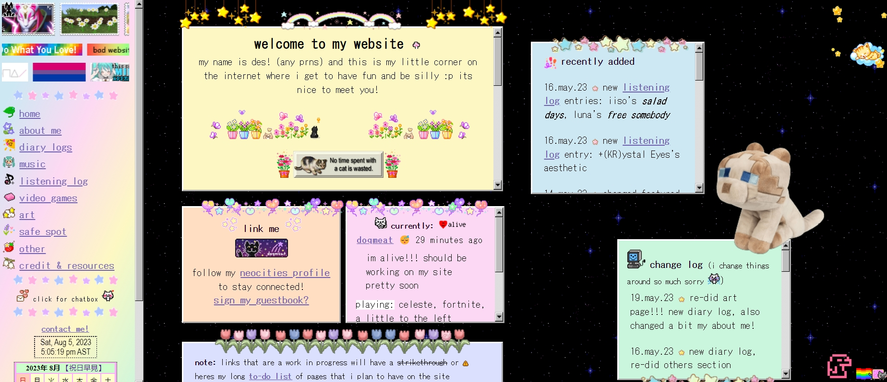

homepage layouts
a place for me to showcase my previous layouts and my thoughts on them! click on the imgs to open them on a new tab.
version 3
14.dec.23 - ???
this is where i learned about CSS grids AND how to switch stylesheets with js.
i wanted to make a homepage that i could switch themes without having to make a completely new one! and i also wanted it to be responsive.
flower theme! (released on 14.dec.23)
version 2
21.may.23 - 14.dec.23
{kind=link}
GOOD LORD. i am finally saying goodbye to this homepage!! i am free!!!!! it's so crazy to think that i've had it for so long!
when coding it i was just going crazy about display: inline-block since i did not know a thing about grids... or flexboxes (i think) SO! i made this :) i was pretty happy for the most part with it! until i learned that navigating it sucked a bit since it wasn't responsive. so i've been wanting to remake it ever since!
anyway! i have very fond memories of this one since i built it from scratch compared to v1 where i was using a template.
version 1
12.apr.23 - 21.may.23
 the first version of my site!! i used a layout that i had found on tumblr and just started my way up there! it helped a lot since i did not know a lot abt html or css.
honestly i really liked how it just looked like a bunch of sticky notes and i thought that was so charming  i didnt know a lot about html/css the coding for this looked pretty HORRIBLE. like those graphics that you see on top of the sticky notes? yeah i was just doing all of that with top bottom position absolute on seperate divs in the body tag and calling it a day
i didnt know a lot about html/css the coding for this looked pretty HORRIBLE. like those graphics that you see on top of the sticky notes? yeah i was just doing all of that with top bottom position absolute on seperate divs in the body tag and calling it a day  which is not bad!!! it did the job but because of that the process of moving them was so tedious and it would take sometimes HOURS trying to align them pixel perfect. so funny. but i learned!
which is not bad!!! it did the job but because of that the process of moving them was so tedious and it would take sometimes HOURS trying to align them pixel perfect. so funny. but i learned!
since i was just learning, most pages (if not pretty much all of them) were following this sticky notes theme! i did like it but i wanted my pages to look different from each other so the site would be more interesting and fun to work on imo. so i started redoing every page when i got done with that i redid my homepage to the one you see today! (as of now...)